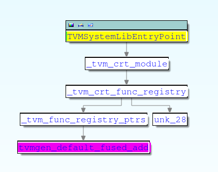

Micro TVM
Table of Contents
1. Micro TVM
tvm/docs/dev/microtvm_design.rst
1.1. system-lib
1.1.1. The Problem of DSO
library 正常是通过 DSO 的形式保存, 并在运行时通过 dlsym 方式来查找符号, system-lib 机制是为了解决有些系统不支持 dlopen, dlsym 的问题. 如果无法用 dlsym 来查找, 那用什么方式来找到 `tvmgen_default_fused_add`?
有两种方案: c++ runtime 或 c runtime
1.1.2. C++ Runtime
import tvm
from tvm import relay
x = relay.var("x", shape=(1, 1000), dtype="float32")
y = relay.add(x, x)
func = relay.Function([x], y)
mod = tvm.IRModule.from_expr(func)
print(mod)
with tvm.transform.PassContext(opt_level=1):
mod = relay.build(mod, target="llvm --system-lib --runtime=c++", params=None)
mod.lib.save("/tmp/a.o")
def @main(%x: Tensor[(1, 1000), float32]) { add(%x, %x) }
readelf -s /tmp/a.o echo "------" readelf -a /tmp/a.o|grep "Relocation section '.rela.ctors'" -A 3
Symbol table '.symtab' contains 14 entries: Num: Value Size Type Bind Vis Ndx Name 0: 0000000000000000 0 NOTYPE LOCAL DEFAULT UND 1: 0000000000000000 0 FILE LOCAL DEFAULT ABS TVMMod 2: 0000000000000330 40 FUNC LOCAL DEFAULT 2 _tvm_module_startup 3: 0000000000000210 284 FUNC LOCAL DEFAULT 2 tvmgen_default_fused_add 4: 0000000000000000 0 SECTION LOCAL DEFAULT 2 5: 0000000000000000 0 SECTION LOCAL DEFAULT 5 6: 0000000000000000 0 SECTION LOCAL DEFAULT 8 7: 0000000000000000 0 SECTION LOCAL DEFAULT 9 8: 0000000000000000 0 SECTION LOCAL DEFAULT 10 9: 0000000000000000 0 SECTION LOCAL DEFAULT 19 10: 0000000000000000 0 NOTYPE GLOBAL DEFAULT UND TVMAPISetLastError 11: 0000000000000000 0 NOTYPE GLOBAL DEFAULT UND TVMBackendRegisterSystemL 12: 0000000000000000 8 OBJECT WEAK DEFAULT 4 __tvm_module_ctx 13: 0000000000000000 523 FUNC GLOBAL DEFAULT 2 tvmgen_default_fused_add
Relocation section '.rela.ctors' at offset 0x1228 contains 1 entry: Offset Info Type Sym. Value Sym. Name + Addend 000000000000 000400000001 R_X86_64_64 0000000000000000 .text + 330
相比没有加 system-lib 的情形, a.o 多了几个 symbol:
__tvm_module_startup
利用 elf 的 ctor 在应用启动时调用 __tvm_module_startup
TVMBackendRegisterSystemLibSymbol
__tvm_module_startup 的代码会通过 TVMBackendRegisterSystemLibSymbol("tvmgen_default_fused_add",tvmgen_default_fused_add) 的方式把 tvmgen_default_fused_add 函数注册到一个 runtime 负责的全局的 `SystemLibrary` 上
1.1.2.1. __tvm_module_startup
void CodeGenCPU::AddStartupFunction() { if (!target_c_runtime_) { // 构造 __tvm_module_startup 函数 function_ = llvm::Function::Create(ftype, llvm::Function::InternalLinkage, "__tvm_module_startup", module_.get()); llvm::BasicBlock* startup_entry = llvm::BasicBlock::Create(*ctx_, "entry", function_); // __tvm_module_startup 调用 f_tvm_register_system_symbol_ for (const auto& kv : export_system_symbols_) { builder_->CreateCall(f_tvm_register_system_symbol_, {name, builder_->CreateBitCast(kv.second, t_void_p_)}); } // 把 __tvm_module_startup 加到 elf 的 .ctor 中 llvm::appendToGlobalCtors(*module_, function_, 65535); } } f_tvm_register_system_symbol_ = llvm::Function::Create( llvm::FunctionType::get(t_int_, {t_char_->getPointerTo(), t_void_p_}, false), llvm::Function::ExternalLinkage, "TVMBackendRegisterSystemLibSymbol", module_.get());
对应生成的代码为:
.text:0000000000000340 __tvm_module_startup proc near ; DATA XREF: .ctors:0000000000000D50 .text:0000000000000340 push rax .text:0000000000000341 lea rdi, a__tvm_module_c ; "__tvm_module_ctx" .text:0000000000000348 mov rsi, cs:__tvm_module_ctx_ptr .text:000000000000034F call TVMBackendRegisterSystemLibSymbol ; PIC mode .text:0000000000000354 lea rdi, aTvmgen_default ; "tvmgen_default_fused_add" .text:000000000000035B mov rsi, cs:tvmgen_default_fused_add_ptr .text:0000000000000362 pop rax .text:0000000000000363 .text:0000000000000363 loc_363: ; DATA XREF: .eh_frame:0000000000000D78 .text:0000000000000363 jmp TVMBackendRegisterSystemLibSymbol ; PIC mode .text:0000000000000363 __tvm_module_startup endp
1.1.2.2. TVMBackendRegisterSystemLibSymbol
TVMBackendRegisterSystemLibSymbol 是 tvm runtime 提供的函数
int TVMBackendRegisterSystemLibSymbol(const char* name, void* ptr) { tvm::runtime::SystemLibrary::Global()->RegisterSymbol(name, ptr); return 0; } // system_library.cc void RegisterSymbol(const std::string& name, void* ptr) { std::lock_guard<std::mutex> lock(mutex_); auto it = tbl_.find(name); if (it != tbl_.end() && ptr != it->second) { LOG(WARNING) << "SystemLib symbol " << name << " get overriden to a different address " << ptr << "->" << it->second; } tbl_[name] = ptr; }
SystemLibrary 并是不是一个真正的 `library`: 它的 RegisterSymbol 只是保存了一个 symbol -> function 的 mapping, 但它与 DSOLibrary 一样提供了 GetSymbol 接口:
void* GetSymbol(const char* name) final { std::lock_guard<std::mutex> lock(mutex_); auto it = tbl_.find(name); if (it != tbl_.end()) { return it->second; } else { return nullptr; } }
有了这个全局的 SystemLibrary 做为 registry, 便不再需要依赖 dso 的 dlsym 了
1.1.3. C Runtime
当 TVM 需要跑在开发板上时，会有几个问题：
- 板子可能没有支持 ctor 的环境
- 板子上关于内存分配，log 等功能需要有特定的实现
为此，TVM 以提出一个 c runtime.
c runtime 的目标场景是那些无法支持 ctor (即 .init/.init_array) 的环境, 例如不支持 rtld 或没有 startfiles 的情况 init_array 如何被调用
c runtime 无法利用 ctor 来注册 mapping, 所以它实现了一个函数 `TVMSystemLibEntryPoint`, 这个函数会返回一个包含 {names, functions} 的结构体,用来初始化 SystemLib
C Runtime 会利用 tvm::codegen::CreateMetadataModule 完成与 c++ 的 __tvm_module_startup 类似的功能.
tvm/src/relay/backend/build_module.cc::ret_.mod = tvm::codegen::CreateMetadataModule(ret_.params, ret_.mod, ext_mods, GetTargetHost(),
import tvm
from tvm import relay
x = relay.var("x", shape=(1, 1000), dtype="float32")
y = relay.add(x, x)
func = relay.Function([x], y)
mod = tvm.IRModule.from_expr(func)
with tvm.transform.PassContext(opt_level=1):
mod = relay.build(mod, target="llvm --system-lib --runtime=c", params=None)
mod.lib.export_library("/tmp/a.tar")
tar zxvf /tmp/a.tar echo "------lib0.o" readelf -s /tmp/lib0.o echo "------lib1.o" readelf -s /tmp/lib1.o
lib0.o devc.o lib1.o -–—lib0.o
Symbol table '.symtab' contains 15 entries: Num: Value Size Type Bind Vis Ndx Name 0: 0000000000000000 0 NOTYPE LOCAL DEFAULT UND 1: 0000000000000000 0 FILE LOCAL DEFAULT ABS TVMMetadataMod 2: 0000000000000008 16 OBJECT LOCAL DEFAULT 4 _tvm_crt_func_registry 3: 0000000000000018 8 OBJECT LOCAL DEFAULT 4 _tvm_crt_module 4: 0000000000000000 8 OBJECT LOCAL DEFAULT 4 _tvm_func_registry_ptrs 5: 0000000000000000 0 SECTION LOCAL DEFAULT 2 6: 0000000000000000 0 SECTION LOCAL DEFAULT 4 7: 0000000000000000 0 SECTION LOCAL DEFAULT 6 8: 0000000000000000 0 SECTION LOCAL DEFAULT 7 9: 0000000000000000 0 SECTION LOCAL DEFAULT 8 10: 0000000000000000 0 SECTION LOCAL DEFAULT 9 11: 0000000000000000 0 SECTION LOCAL DEFAULT 16 12: 0000000000000000 0 SECTION LOCAL DEFAULT 18 13: 0000000000000000 8 FUNC GLOBAL DEFAULT 2 TVMSystemLibEntryPoint 14: 0000000000000000 0 NOTYPE GLOBAL DEFAULT UND tvmgen_default_fused_add -–—lib1.o
Symbol table '.symtab' contains 11 entries: Num: Value Size Type Bind Vis Ndx Name 0: 0000000000000000 0 NOTYPE LOCAL DEFAULT UND 1: 0000000000000000 0 FILE LOCAL DEFAULT ABS TVMMod 2: 0000000000000210 284 FUNC LOCAL DEFAULT 2 tvmgen_default_fused_add_ 3: 0000000000000000 0 SECTION LOCAL DEFAULT 2 4: 0000000000000000 0 SECTION LOCAL DEFAULT 4 5: 0000000000000000 0 SECTION LOCAL DEFAULT 5 6: 0000000000000000 0 SECTION LOCAL DEFAULT 6 7: 0000000000000000 0 SECTION LOCAL DEFAULT 7 8: 0000000000000000 0 SECTION LOCAL DEFAULT 16 9: 0000000000000000 0 NOTYPE GLOBAL DEFAULT UND TVMAPISetLastError 10: 0000000000000000 523 FUNC GLOBAL DEFAULT 2 tvmgen_default_fused_add
- lib1.o 有 tvmgen_default_fused_add 的实现
- lib0.o 中的 TVMSystemLibEntryPoint 是用来返回 {"names",funcs} 的数据的

图中的 unk_28 实际上就是指向 .rodata 上的字符串 "tvmgen_default_fused_add", 所以 lib0.o 中的 TVMSystemLibEntryPoint 最终会返回
{"tvmgen_default_fused_add", tvmgen_default_fused_add}
// crt_runtime_api.c int SystemLibraryCreate(TVMValue* args, int* type_codes, int num_args, TVMValue* ret_val, int* ret_type_codes) { const TVMModule* system_lib; system_lib = TVMSystemLibEntryPoint(); TVMModCreateFromCModule(system_lib, &system_lib_handle); ret_val[0].v_handle = system_lib_handle; ret_type_codes[0] = kTVMModuleHandle; return 0; }
1.2. Static Deploy
1.2.1. C++ Runtime
1.2.2. C Runtime
1.2.3. 交叉编译
在 target 中使用 mtriple, mcpu 指定, 由 llvm 负责交叉编译.
mod = relay.build( mod, target="llvm --system-lib --runtime=c, -mtriple=armv8l-linux-gnueabihf -mcpu=cortex-m7", params=None, )
使用 c target, 生成 c 代码后自己做交叉编译
但看起来 c target 没有生成向量化的代码
1.3. Micro TVM
使用 c_runtime + system_lib, 已经可以编译出一个静态链接的可以在 mcu 上运行的实例了, 实际上 tvm.target.target.micro("stm32f746xx") 返回的 target 字符串基本上为: "c -system-lib -runtime=c -mcpu=cortex-m7"
更多 Micro TVM 相关的内容和 RPC 有关, 即 host 的 python 代码可以像本地模型一样用 graph_runner 运行 mcu 上的实例. https://tvm.apache.org/docs/tutorials/micro/micro_tflite.html?highlight=microtvm
具体的
用户需要自己提供一个 tvm.micro.Compiler 的实现, 用来把 tvm 编译生成的 c 代码编译成最终在 mcu 上执行的 bin. 因为 Micro TVM 期望用户自己实现 Compiler 来生成最终的 bin, 所以 tvm.target.target.micro 使用的 target 是 "c", 而不是"llvm"用户需要自己提供一个 tvm.micro.Flasher, 同时需要自己提供一个tvm.micro.Transport. 在 host 上用 Flasher 把 bin flash 到 mcu 上, 用Transport控制 mcu 的执行并拿到结果. host 端的 Transport 需要与 mcu 上的MicroRPCServer进行通信, 并在通信的基础上封装成一个 RPC 服务, 以便 host 以通过RPC 直接在mcu 上执行代码.
新的 TVM 代码把 Compiler, Flasher, Transport 功能重写了 Project API, 功能与之前的类似
tvm/python/tvm/micro/project.py
https://tvm.apache.org/docs/dev/microtvm_design.html?highlight=microtvm%20design
1.3.1. Project API
1.3.1.1. Overview
Project API 要求每个板子提供一个 template_project_dir, 例如:
tvm/build/standalone_crt/template/host tvm/apps/microtvm/zephyr/template_project
每个 template dir 都需要有一个 microtvm_api_server.py, 这个模块以 popen+pipe 的形式对外提供 build, flash, transport 等功能. 另外, build 时编译出来的 bin 需要在代码中调用 MicroTVMRpcServerLoop 以启动 microtvm RPC server
有了这个抽象的 project, TVM 可以:
- 用 host-driven 的方式在板子上执行 MicroTVM model
- 使 MicroTVM 支持 AutoTVM
1.3.1.2. Example
tvm/gallery/how_to/work_with_microtvm/micro_autotune.py
import numpy as np import tvm from tvm import relay import tempfile def get_model(): x = relay.var("x", relay.TensorType([1, 10], "float32")) y = relay.add(x, x) f = relay.Function([x], y) relay_mod = tvm.IRModule.from_expr(f) relay_mod = relay.transform.InferType()(relay_mod) return relay_mod def run_model(): relay_mod = get_model() with tvm.transform.PassContext(opt_level=3, config={"tir.disable_vectorize": True}): model = relay.build( relay_mod, target=tvm.target.target.micro("host"), params=None ) project = tvm.micro.generate_project( "/home/sunway/source/tvm/build/standalone_crt/template/host", model, tempfile.TemporaryDirectory().name, ) project.build() project.flash() with tvm.micro.Session(project.transport()) as session: debug_module = tvm.micro.create_local_debug_executor( model.get_graph_json(), session.get_system_lib(), session.device ) debug_module.set_input("x", np.ones((1, 10))) debug_module.run() print(debug_module.get_output(0)) if __name__ == "__main__": # Project API 可以用来在 pc 上远程在板子上执行 model run_model()
Node Name Ops Time(us) Time(%) Shape Inputs Outputs ----–— — ---–— --–— –— -–— --–— tvmgen_default_fused_add tvmgen_default_fused_add 0.0 100.0 (1, 10) 1 1 Total_time - 0.0 - - - -
1.3.1.3. Impl
Project API 对外提供的主要接口是 generate_project, host-driven 时会直接调用该接口, AutoTVM 使用的 AutoTvmModuleLoader 也需要调用该接口
使用 popen 方式启动 template_project_dir 中的 microtvm_api_server.py 做为 client
def generate_project( template_project_dir: Union[pathlib.Path, str], module: ExportableModule, generated_project_dir: Union[pathlib.Path, str], options: dict = None, ): template = TemplateProject.from_directory(str(template_project_dir)) return template.generate_project(module, str(generated_project_dir), options) class TemplateProject: @classmethod def from_directory(cls, template_project_dir): return cls(client.instantiate_from_dir(template_project_dir)) # 在 template_project_dir 是查找 microtvm_api_server.py 或 # launch_microtvm_api_server.sh用 popen 启动一个子进程执行这个 script, 这个 # script 会在一个 while loop 中等待后续命令, 比如 generate_project def instantiate_from_dir(project_dir: typing.Union[pathlib.Path, str], debug: bool = False): args = None project_dir = pathlib.Path(project_dir) python_script = project_dir / SERVER_PYTHON_FILENAME if python_script.is_file(): args = [sys.executable, str(python_script)] launch_script = project_dir / SERVER_LAUNCH_SCRIPT_FILENAME if launch_script.is_file(): args = [str(launch_script)] api_server_read_fd, tvm_write_fd = os.pipe() tvm_read_fd, api_server_write_fd = os.pipe() args.extend(["--read-fd", str(api_server_read_fd), "--write-fd", str(api_server_write_fd)]) api_server_proc = subprocess.Popen( # pylint: disable=unused-variable args, bufsize=0, pass_fds=(api_server_read_fd, api_server_write_fd), cwd=project_dir ) os.close(api_server_read_fd) os.close(api_server_write_fd) return ProjectAPIClient( os.fdopen(tvm_read_fd, "rb", buffering=0), os.fdopen(tvm_write_fd, "wb", buffering=0) )
通过调用 client 的 generate_project 生成新的 GeneratedProject 目录
# 先 export_model_library, 然后调用 client 的 generate_project def generate_project(self, graph_executor_factory, project_dir, options): model_library_dir = utils.tempdir() model_library_format_path = model_library_dir.relpath("model.tar") export_model_library_format(graph_executor_factory, model_library_format_path) return self.generate_project_from_mlf(model_library_format_path, project_dir, options) def generate_project_from_mlf(self, model_library_format_path, project_dir, options): self._api_client.generate_project( model_library_format_path=str(model_library_format_path), standalone_crt_dir=get_standalone_crt_dir(), project_dir=project_dir, options=options, ) # ... # _api_client 的 generate_project (以 host 的 microtvm_api_server.py 为例), 实际 # 就是复制了一堆文件到 GeneratedProject 目录 def generate_project(self, model_library_format_path, standalone_crt_dir, project_dir, options): shutil.copy2(__file__, project_dir / os.path.basename(__file__)) project_model_library_format_path = project_dir / MODEL_LIBRARY_FORMAT_RELPATH shutil.copy2(model_library_format_path, project_model_library_format_path) extract_path = project_dir / project_model_library_format_path.stem with tarfile.TarFile(project_model_library_format_path) as tf: os.makedirs(extract_path) tf.extractall(path=extract_path) crt_path = project_dir / "crt" os.mkdir(crt_path) for item in self.CRT_COPY_ITEMS: # ... # Populate Makefile. shutil.copy2(pathlib.Path(__file__).parent / "Makefile", project_dir / "Makefile") # Populate crt-config.h crt_config_dir = project_dir / "crt_config" crt_config_dir.mkdir() shutil.copy2( os.path.join(os.path.dirname(__file__), "..", "crt_config-template.h"), os.path.join(crt_config_dir, "crt_config.h"), ) # Populate src/ src_dir = os.path.join(project_dir, "src") os.mkdir(src_dir) shutil.copy2( os.path.join(os.path.dirname(__file__), "main.cc"), os.path.join(src_dir, "main.cc") )
generate_project 完成后使用 GeneratedProject 目录中的 microtvm_api_server.py 做为新的 client
def generate_project_from_mlf(self, model_library_format_path, project_dir, options): self._api_client.generate_project( # ... ) return GeneratedProject.from_directory(project_dir, options)
- 可以通过最后获得的 project 完成 build, flash, transport 等功能
1.3.2. RPC
RPC 的结构为:
|
Session (Flasher/Transport) [python] |
-> RPCSession [c++] |
-> MicroTransportChannel [c++] -> MicroTVMRpcServerLoop
| -> Session
| -> MinRPCServer
| -> HandleNormalCallFunc, ...
|
1.3.2.1. RPC Impl
1.3.2.1.1. Client
- 初始化 session
tvm.micro.Session(binary=micro_binary, flasher=flasher) def Session.__enter__(self): self.transport_context_manager = self.flasher.flash(self.binary) self.transport = TransportLogger( self.session_name, self.transport_context_manager, level=logging.DEBUG ).__enter__() self._rpc = RPCSession( _rpc_connect( self.session_name, self._wrap_transport_write, self._wrap_transport_read, int(timeouts.session_start_retry_timeout_sec * 1e6), int(timeouts.session_start_timeout_sec * 1e6), int(timeouts.session_established_timeout_sec * 1e6), ) ) # 其中 _wrap_transport_write, _wrap_transport_read 是对 transport 的简单封装 def _wrap_transport_read(self, n, timeout_microsec): return self.transport.read( n, float(timeout_microsec) / 1e6 if timeout_microsec is not None else None ) def _wrap_transport_write(self, data, timeout_microsec): return self.transport.write( data, float(timeout_microsec) / 1e6 if timeout_microsec is not None else None ) TVM_REGISTER_GLOBAL("micro._rpc_connect").set_body([](TVMArgs args, TVMRetValue* rv) { MicroTransportChannel* micro_channel = new MicroTransportChannel(args[1], args[2], ::std::chrono::microseconds(uint64_t(args[3])), ::std::chrono::microseconds(uint64_t(args[4])), ::std::chrono::microseconds(uint64_t(args[5]))); std::unique_ptr<RPCChannel> channel(micro_channel); auto ep = RPCEndpoint::Create(std::move(channel), args[0], ""); auto sess = CreateClientSession(ep); *rv = CreateRPCSessionModule(sess); });
- 调用 session.get_system_lib
def session.get_system_lib(self): return self._rpc.get_function("runtime.SystemLib")() PackedFunc RPCModuleNode::GetFunction(const std::string& name, const ObjectPtr<Object>& sptr_to_self) final { return WrapRemoteFunc(sess_->GetFunction(name)); } # 写入到 stream 的 RPCCode 为 kGetGlobalFunc PackedFuncHandle RPCClientSession::GetFunction(const std::string& name) final { return endpoint_->SysCallRemote(RPCCode::kGetGlobalFunc, name); } syscall_remote_ = PackedFunc([this](TVMArgs all_args, TVMRetValue* rv) { RPCCode code = static_cast<RPCCode>(all_args[0].operator int()); TVMArgs args(all_args.values + 1, all_args.type_codes + 1, all_args.num_args - 1); uint64_t packet_nbytes = sizeof(code) + handler_->PackedSeqGetNumBytes( args.values, args.type_codes, args.num_args, true); // All packet begins with packet nbytes handler_->Write(packet_nbytes); handler_->Write(code); handler_->SendPackedSeq(args.values, args.type_codes, args.num_args, true); code = HandleUntilReturnEvent(true, [rv](TVMArgs args) { ICHECK_EQ(args.size(), 1); *rv = args[0]; }); ICHECK(code == RPCCode::kReturn) << "code=" << static_cast<int>(code); }); # handler 是 EventHandler 实例 void RPCEndpoint::Init() { // ... handler_ = std::make_shared<EventHandler>(&reader_, &writer_, name_, &remote_key_, flush_writer); // ... } class RPCEndpoint::EventHandler : public dmlc::Stream { public: EventHandler(support::RingBuffer* reader, support::RingBuffer* writer, std::string name, std::string* remote_key, std::function<void()> flush_writer) : reader_(reader), writer_(writer), name_(name), remote_key_(remote_key), flush_writer_(flush_writer) {} void EventHandler::Write(const void* data, size_t size) final { writer_->Write(data, size); } # 最终在 stream 里写了一个 "{kGetGlobalFunc}runtime.SystemLib..."
1.3.2.1.2. Server
server 端 (mcu 端) 需要应用自己启动 loop, 从transport (例如 serial port) 获得数据后交给 MicroRPCServer 处理
- 初始化 rpc_server
// writer_func 是用户自己提供的 function, 用来把 rpc_server 需要返回的数据通过这 // 个 function 写到 transport 上 rpc_server = MicroTVMRpcServerInit(&writer_func, nullptr); tvm::runtime::micro_rpc::g_write_func = write_func; tvm_crt_error_t err = TVMInitializeRuntime(); TVMPlatformMemoryAllocate( TVM_CRT_MAX_PACKET_SIZE_BYTES, dev, &receive_buffer_memory); // ... rpc_server->Initialize(); // MicroRPCServer 初始化时记录了一个 unframer_ 与 session_ 绑定, 后续用户需要通 // 过 MicroTVMRpcServerLoop 手动给 unframer_ 喂数据, session_ 拿到解析数据后会调 // 用 HandleCompleteMessageCb // 另一方面, 与 framer_ 绑定的 send_stream_ 会用到 writer_func (通过一个全局变量) // 把产生的数据写回到 transport 上 class MicroRPCServer { public: MicroRPCServer( uint8_t* receive_storage, size_t receive_storage_size_bytes, microtvm_rpc_channel_write_t write_func, void* write_func_ctx) : receive_buffer_{receive_storage, receive_storage_size_bytes}, framer_{&send_stream_}, session_{&framer_, &receive_buffer_, &HandleCompleteMessageCb, this}, io_{&session_, &receive_buffer_}, unframer_{session_.Receiver()}, rpc_server_{&io_}, is_running_{true} {} void Initialize() { uint8_t initial_session_nonce = Session::kInvalidNonce; session_.Initialize(initial_session_nonce); }
- rpc_server loop
tvm_crt_error_t MicroTVMRpcServerLoop(microtvm_rpc_server_t server_ptr, uint8_t** new_data, size_t* new_data_size_bytes): server->Loop(new_data, new_data_size_bytes); tvm_crt_error_t Loop(uint8_t** new_data, size_t* new_data_size_bytes): err = unframer_.Write(*new_data, *new_data_size_bytes, &bytes_consumed); tvm_crt_error_t Unframer::Write(const uint8_t* data, size_t data_size_bytes,size_t* bytes_consumed): switch (state_) { // ... case State::kFindCrcEnd: return_code = FindCrcEnd(); stream_->PacketDone(crc_ == *reinterpret_cast<uint16_t*>(buffer_)); switch (header.message_type) { default: session_->message_received_func_(session_->message_received_func_context_, header.message_type, session_->receive_buffer_); // message_received_func_ 即 session 初始化时的 HandleCompleteMessageCb void MicroRPCServer::HandleCompleteMessage(MessageType message_type, FrameBuffer* buf) { rpc_server_.ProcessOnePacket(); this->Read(&packet_len); this->Read(&code); if (code >= RPCCode::kSyscallCodeStart) { this->HandleSyscallFunc(code); } else { switch (code) { case RPCCode::kCallFunc: { HandleNormalCallFunc(); TVMFuncCall(reinterpret_cast<void*>(call_handle), values, tcodes, num_args, &(ret_value[1]), &(ret_tcode[1])); break; } // ...
1.3.2.1.3. To summarize
为了实现基于串口的 RPC, TVM 已经实现了大部分功能, 剩余需要自己实现的包括:
client (python) 端需要实现一个串口的 tranport, 通过 Flasher 返回
tvm/python/tvm/micro/contrib/zephyr.pyserver (mcu) 端需要:
tvm/apps/microtvm/zephyr/host_driven/src/main.c- 实现一个写串口数据的 writer_func, 在 MicroTVMRpcServerInit 时注册上去
- 自己从串口读数据, 然后调用 MicroTVMRpcServerLoop
Project API 的 host template 实现了一个基于 popen+pipe 的 RPC 的 demo:
tvm/build/standalone_crt/template/host/main.cc
Project API 的 zephyr template 实现了一个基于 uart 的 RPC 的 demo:
tvm/apps/microtvm/zephyr/template_project/src/host_driven/main.c
1.4. MicroTVM 与 AutoTVM
MicroTVM 通过 Proejct API 和 MicroTVM RPC 支持 AutoTVM
import numpy as np import tvm from tvm import relay import tempfile def get_model(): x = relay.var("x", relay.TensorType([1, 10], "float32")) y = relay.add(x, x) f = relay.Function([x], y) relay_mod = tvm.IRModule.from_expr(f) relay_mod = relay.transform.InferType()(relay_mod) return relay_mod def tune(): relay_mod = get_model() with tvm.transform.PassContext(opt_level=3, config={"tir.disable_vectorize": True}): tasks = tvm.autotvm.task.extract_from_program( relay_mod["main"], {}, tvm.target.target.micro("host") ) module_loader = tvm.micro.AutoTvmModuleLoader( template_project_dir="~/source/tvm/build/standalone_crt/template/host", project_options={"verbose": False}, ) runner = tvm.autotvm.LocalRunner( number=1, repeat=1, timeout=100, module_loader=module_loader ) builder = tvm.autotvm.LocalBuilder( n_parallel=1, build_kwargs={"build_option": {"tir.disable_vectorize": True}}, build_func=tvm.micro.autotvm_build_func, ) for task in tasks: tuner = tvm.autotvm.tuner.GATuner(task) tuner.tune( n_trial=1, measure_option=tvm.autotvm.measure_option(builder=builder, runner=runner), ) if __name__ == "__main__": # Project API 也可以用来做 autotvm tune()
1.4.1. Impl
class AutoTvmModuleLoader: @contextlib.contextmanager def __call__(self, remote_kw, build_result): with open(build_result.filename, "rb") as build_file: build_result_bin = build_file.read() tracker = _rpc.connect_tracker(remote_kw["host"], remote_kw["port"]) remote = tracker.request( remote_kw["device_key"], priority=remote_kw["priority"], session_timeout=remote_kw["timeout"], session_constructor_args=[ "tvm.micro.compile_and_create_micro_session", build_result_bin, self._template_project_dir, json.dumps(self._project_options), ], ) system_lib = remote.get_function("runtime.SystemLib")() yield remote, system_lib def compile_and_create_micro_session( mod_src_bytes: bytes, template_project_dir: str, project_options: dict = None, ): temp_dir = utils.tempdir() # Keep temp directory for generate project temp_dir.set_keep_for_debug(True) model_library_format_path = temp_dir / "model.tar.gz" with open(model_library_format_path, "wb") as mlf_f: mlf_f.write(mod_src_bytes) # 这里使用了 Project API 进行 build, flash template_project = project.TemplateProject.from_directory(template_project_dir) generated_project = template_project.generate_project_from_mlf( model_library_format_path, str(temp_dir / "generated-project"), options=json.loads(project_options), ) generated_project.build() generated_project.flash() transport = generated_project.transport() # 这里使用了 transport 和 bin 中的 microtvm rpc server 交互 rpc_session = Session(transport_context_manager=transport) rpc_session.__enter__() return rpc_session._rpc._sess
1.5. Micro TVM & BYOC
先说结论: Micro TVM 不支持 基于 __tvm_dev_mblob 方式的 BYOC, 但可以支持 c_src 形式的 BYOC C Runtime
为了支持 __tvm_dev_mblob, 最重要的一点是把 __tvm_dev_mblob 注册到 SystemLib 上.
TVM Runtime 的启动有三种方式:
- 通过 LoadFromFile 加载 DSOLibrary, 具体实现是 CreateModuleFromLibrary
- 通过 runtime.SystemLib 加载 SystemLibrary
- c++ runtime 的 runtime.SystemLib 的实现与 DSOLibrary 一样, 是 CreateModuleFromLibrary
- c runtime 的 runtime.SystemLib 的实现是 SystemLibraryCreate
编译时: 1 和 2.1 编译时会注册 __tvm_dev_mblob, 而 2.2 不支持运行时: 1 和 2.1 在运行时都会去加载 __tvm_dev_mblob, 而 2.2 则不支持.
1.5.1. system-lib & c++ runtime 注册 __tvm_dev_mblob
2.1 (system-lib & c++ runtime) 是支持注册 __tvm_dev_mblob 的
def export_library(self, file_name, fcompile=None, addons=None, workspace_dir=None, **kwargs): # ... if self.imported_modules: if enabled("llvm") and llvm_target_triple: path_obj = os.path.join(workspace_dir, f"devc.{object_format}") m = _ffi_api.ModulePackImportsToLLVM(self, is_system_lib, llvm_target_triple) m.save(path_obj) files.append(path_obj) else: path_cc = os.path.join(workspace_dir, "devc.c") with open(path_cc, "w") as f: f.write(_ffi_api.ModulePackImportsToC(self, is_system_lib)) files.append(path_cc)
ModulePackImportsToLLVM 和 ModulePackImportsToC 会生成类似下面的代码:
extern int TVMBackendRegisterSystemLibSymbol(const char*, void*); static int __tvm_dev_mblob_reg_ = TVMBackendRegisterSystemLibSymbol( "__tvm_dev_mblob", (void*)__tvm_dev_mblob);
通过 c++ 的 ctor 完成对 TVMBackendRegisterSystemLibSymbol 的调用.
1.5.2. system-lib & c runtime 不支持注册和解析 __tvm_dev_mblob
从当前的代码来看:
- 在 export_library 时不会针对 c_runtime 生成注册 __tvm_dev_mblob 的代码 (例如 ModulePackImportsToLLVM)
- 运行时 c runtime 也不会解析 __tvm_dev_mblob
- 以及一些其它的问题例如:
tvm/src/target/metadata_module.cc::if (is_targeting_crt)
所以 microtvm 无法支持 BYOC.
但是如果 c runtime 只是为了解决 c++ runtime ctor 的问题, 我们其实可以手动调用 c++ ctor:
#include <stdio.h> class A { public: A() { printf("hello\n"); } }; A a, b, c; typedef void (*FP)(); // __init_array_start, __init_array_end 是通过 linker script 定义的符号 extern FP __init_array_start; extern FP __init_array_end; int main(int argc, char *argv[]) { printf("----------main----------\n"); for (FP *p = &__init_array_start; p < &__init_array_end; p++) { (*p)(); } return 0; }
hello hello hello -----–—main-----–— hello hello hello
1.5.3. ModulePackImportsToLLVM 的 Bug
ModulePackImportsToLLVM 时如果 is_system_lib 为 False, 则不会生成注册 __tvm_dev_mblob 的代码, 但 is_system_lib 的判断条件是:
is_system_lib = ( module.type_key == "llvm" and module.get_function("__tvm_is_system_module")() )
PackedFunc GetFunction(const std::string& name, const ObjectPtr<Object>& sptr_to_self) final { if (name == "__tvm_is_system_module") { // 判断有没有 __tvm_module_startup bool flag = (mptr_->getFunction("__tvm_module_startup") != nullptr); return PackedFunc([flag](TVMArgs args, TVMRetValue* rv) { *rv = flag; }); } // ... } // 添加 __tvm_module_startup 的代码 void CodeGenCPU::AddStartupFunction() { if (!target_c_runtime_) { llvm::FunctionType* ftype = llvm::FunctionType::get(t_void_, {}, false); function_ = llvm::Function::Create(ftype, llvm::Function::InternalLinkage, "__tvm_module_startup", module_.get()); for (const auto& kv : export_system_symbols_) { llvm::Value* name = GetConstString(kv.first); builder_->CreateCall(f_tvm_register_system_symbol_, {name, builder_->CreateBitCast(kv.second, t_void_p_)}); } // ... } } std::unique_ptr<llvm::Module> CodeGenLLVM::Finish() { this->AddStartupFunction(); // ... // optimize this->Optimize(); return std::move(module_); }
问题出在最后那个 llvm::Optimize
当 relay IR 时没有任何函数需要在 CPU 执行时 (所有代码都交给 dnnl 执行), export_system_symbols_ 会为空, 这时虽然已经在 llvm module 里生成了一个 __tvm_module_startup 函数, 但因为它的函数体为空且函数是 InternalLinkage, llvm::Optimize 会把它删除…
#!/usr/bin/env python3 # -*- coding: utf-8 -*- # 2021-08-03 11:11 import tvm import numpy as np from tvm import te from tvm import relay import os def get_good_mod(): d1 = relay.var("d1", shape=(1, 32, 56, 56), dtype="float32") w1 = relay.var("w1", shape=(32, 32, 3, 3), dtype="float32") b1 = relay.var("b1", shape=(32,), dtype="float32") conv = relay.nn.conv2d(d1, w1, strides=(1, 1), padding=(1, 1)) bias = relay.nn.bias_add(conv, b1) relu = relay.nn.relu(bias) func = relay.Function([d1, w1, b1], relu) mod = tvm.IRModule.from_expr(func) mod = relay.transform.InferType()(mod) return mod def get_bug_mod(): x = relay.var("x", shape=(10,), dtype="float32") y = relay.add(x, x) func = relay.Function([x], y) mod = tvm.IRModule.from_expr(func) return mod def prepare_relay_libs(): mod = get_bug_mod() mod = relay.transform.AnnotateTarget("dnnl")(mod) mod = relay.transform.PartitionGraph()(mod) with tvm.transform.PassContext(opt_level=1): mod = relay.build(mod, target="llvm --system-lib --runtime=c++", params=None) mod.lib.export_library("/tmp/libdouble_bug.tar") mod = get_good_mod() mod = relay.transform.AnnotateTarget("dnnl")(mod) mod = relay.transform.PartitionGraph()(mod) with tvm.transform.PassContext(opt_level=1): mod = relay.build(mod, target="llvm --system-lib --runtime=c++", params=None) mod.lib.export_library("/tmp/libdouble_good.tar") if __name__ == "__main__": prepare_relay_libs()
echo "----------good----------" tar xvf /tmp/libdouble_good.tar -C /tmp readelf -s /tmp/lib0.o readelf -s /tmp/devc.o echo "----------bug----------" tar xvf /tmp/libdouble_bug.tar -C /tmp readelf -s /tmp/lib0.o readelf -s /tmp/devc.o
-----–—good-----–— lib0.o devc.o
Symbol table '.symtab' contains 16 entries: Num: Value Size Type Bind Vis Ndx Name 0: 0000000000000000 0 NOTYPE LOCAL DEFAULT UND 1: 0000000000000000 0 FILE LOCAL DEFAULT ABS TVMMod 2: 0000000000000000 0 NOTYPE LOCAL DEFAULT 4 .LCPI0_0 3: 00000000000005f0 40 FUNC LOCAL DEFAULT 2 __tvm_module_startup 4: 0000000000000370 40 FUNC LOCAL DEFAULT 2 tvmgen_default_fused_nn_b 5: 0000000000000000 0 SECTION LOCAL DEFAULT 2 6: 0000000000000000 0 SECTION LOCAL DEFAULT 6 7: 0000000000000000 0 SECTION LOCAL DEFAULT 9 8: 0000000000000000 0 SECTION LOCAL DEFAULT 10 9: 0000000000000000 0 SECTION LOCAL DEFAULT 11 10: 0000000000000000 0 SECTION LOCAL DEFAULT 20 11: 0000000000000000 0 NOTYPE GLOBAL DEFAULT UND TVMAPISetLastError 12: 0000000000000000 0 NOTYPE GLOBAL DEFAULT UND TVMBackendParallelLaunch 13: 0000000000000000 0 NOTYPE GLOBAL DEFAULT UND TVMBackendRegisterSystemL 14: 0000000000000000 8 OBJECT WEAK DEFAULT 5 __tvm_module_ctx 15: 0000000000000000 869 FUNC GLOBAL DEFAULT 2 tvmgen_default_fused_nn_b
Symbol table '.symtab' contains 10 entries: Num: Value Size Type Bind Vis Ndx Name 0: 0000000000000000 0 NOTYPE LOCAL DEFAULT UND 1: 0000000000000000 0 FILE LOCAL DEFAULT ABS devc 2: 0000000000000000 8 FUNC LOCAL DEFAULT 3 GLOBAL__sub_I_devc 3: 0000000000000010 28 FUNC LOCAL DEFAULT 3 __cxx_global_var_init 4: 0000000000000000 4 OBJECT LOCAL DEFAULT 6 __tvm_dev_mblob_reg 5: 0000000000000000 0 SECTION LOCAL DEFAULT 3 6: 0000000000000000 0 SECTION LOCAL DEFAULT 5 7: 0000000000000000 0 SECTION LOCAL DEFAULT 6 8: 0000000000000000 0 NOTYPE GLOBAL DEFAULT UND TVMBackendRegisterSystemL 9: 0000000000000000 2990 OBJECT GLOBAL DEFAULT 5 __tvm_dev_mblob -----–—bug-----–— lib0.o devc.o
Symbol table '.symtab' contains 6 entries: Num: Value Size Type Bind Vis Ndx Name 0: 0000000000000000 0 NOTYPE LOCAL DEFAULT UND 1: 0000000000000000 0 FILE LOCAL DEFAULT ABS TVMMod 2: 0000000000000000 0 SECTION LOCAL DEFAULT 3 3: 0000000000000000 0 SECTION LOCAL DEFAULT 4 4: 0000000000000000 0 SECTION LOCAL DEFAULT 5 5: 0000000000000000 0 SECTION LOCAL DEFAULT 12
Symbol table '.symtab' contains 3 entries: Num: Value Size Type Bind Vis Ndx Name 0: 0000000000000000 0 NOTYPE LOCAL DEFAULT UND 1: 0000000000000000 0 FILE LOCAL DEFAULT ABS devc 2: 0000000000000000 1015 OBJECT GLOBAL DEFAULT 3 __tvm_dev_mblob